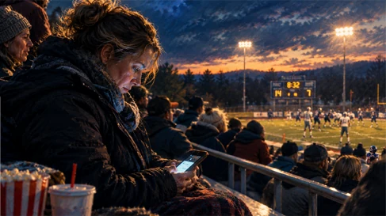

Friday. 6:40 PM. The field behind the middle school.
Cold air. Finally. The good kind. Crisp. Clean. Light.
Aluminum bleachers still holding the last heat of the afternoon.
Popcorn. Soda pop. Hot dogs. Field lights buzzing up one bank at a time.
Dana was at the center at 7 AM this morning. Four dives. Two new patients, one of them nervous, both of them fine. She ate lunch half standing up while charting. She is sitting down now, which after eleven hours is no small thing.
Her son plays right guard. He will not touch the ball. He has never touched the ball. He is out there in the cold doing a job nobody in the stands can see, and he loves it.
The woman beside her says something about how fall is finally in the air.
"Mm," Dana says, without turning her head.
Second quarter. A punt. A flag. A long stretch of nothing.
Her phone comes out.
Forty seconds in: layoffs in an industry she doesn't work in.
Ninety seconds: a war four thousand miles away, and a clip of something burning.
Two minutes: a calm man at a nice table in front of a microphone explaining that her job will not exist in five years.
Her jaw is tight. Her shoulders are up around her ears. She’s scowling. She is not aware of any of it.
Between plays, her son looks up into the bleachers. He does this two or three times a game and finds her. Each time she's looking down.
He turns back around.
They win.
She doesn't know the score until someone says it in the parking lot.
She drives home with both hands on the wheel and doesn't remember the drive.
1:10 AM. Awake. Still scrolling. No — wait. It’s time for bed...

There's a word for what happened in the bleachers that night.
Farsightedness, also known as hyperopia. The eye doesn't bring an image into focus where it should. Things farther away come into focus more easily than things right in front of you. You can see the billboard across the field and struggle with the label in your own hand.
That's not a metaphor. It’s the whole condition.
Now go back and read the story again. What’d you skip?
The first cold night of the year and Dana was sitting in it.
Eleven hours mostly on her feet and she’s seated.
An empty stretch with nothing in it.
A woman sitting beside Dana, starting a conversation.
A fourteen-year-old boy, in the cold, looking for his mother in a crowd.
And later? The sleep her body had earned twice over.
Real things. All of them close enough to touch.
And the thing she gave the evening to? A layoff at a company she's never worked for. A fire on another continent. A man she'll never meet with a prediction he can't realistically make.
Not one of them within miles of where Dana was sitting. Not one of them something she could act on that night. Not one of them, in any real sense, hers.
She traded things she could touch for things she couldn't.
So here is the question, and it's the only one in this piece that matters.
Does that shape fit you?
Not the football field. The shape. The gap you fill with the phone. The tight jaw you don't notice. The scowl. The evening you can't describe afterward.
Sit with it a second before you answer.
And if it does fit, you should know how much company you have.
Gallup has asked Americans about crime in two different ways: how serious a problem is crime in your own area, and how serious a problem is crime nationally. 12% and 49% respectively. The same people can look at the street they live on and see one thing, then look at the country through a much wider lens and see something considerably worse.
The same pattern appears in other countries.
Ipsos polled the French regarding their personal thoughts about 2025. 55% said it was not a bad year for them or their family. 85% said it was a bad year for France.
British respondents were asked about 2026. 58% were optimistic that 2026 would be better for them than 2025. Just 32% believed Britons would become more optimistic about the future.
Different countries. Different questions. Same strange distance between the world immediately around a person and the world presented at scale.
And the explanation? Isn't particularly complicated.
You know your own life because you inhabit it. You know what’s going on in the world from headlines. And a headline? Is selected for being exceptional. That's its job. A social media or news feed is not lying to you. It's designed to surface whatever is consequential, emotional, unusual, or new. The ultimate scroll-stopper, delivered at 6:40 PM on a Friday while your kid is looking for you in the stands.
The error isn't necessarily in the information. It's in what we ask the information to tell us.
We read the feed as a weather report for our own lives and it was never that.
Now, some of you are going to read this and come back with a perfectly legitimate objection.
Not a distorted one. A real life one.
Somebody reading this is genuinely in the middle of something hard right now. A diagnosis. A number in a bank account that doesn't reconcile. A person at home who is not okay. If that's you, nothing here is asking you to feel differently about it. Reframing a real thing doesn't fix it, and pretending it would helps nobody.
The tightness? The scowl? Those came from thing after thing reaching Dana through a screen, from miles away, about nothing Dana could touch.
And that's the part worth noticing.
Nobody took the wheel away from Dana. She let go of it for a second. In a gap. In the cold.
And something else slid into the seat.
It didn't ask to take the wheel and it didn't have to.
The good news is that it will give the wheel back the moment you reach for it.
You just have to notice you let go.
Fourth down. Look up.